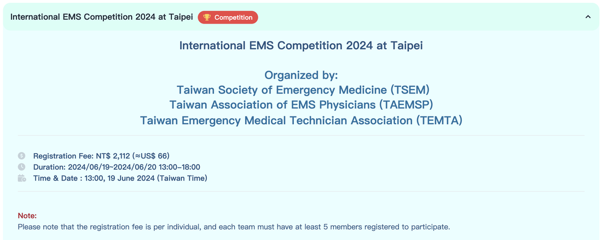

2024 年 2 月刊
台灣緊急醫療救護通訊

國內要聞_by臺大醫院雲林分院 李安阜醫師
影：新北市消防局建立到院前輸血流程：透過指揮中心啟動雙軌派遣並請快搜部隊醫療組至醫院領取血品及相關急救、止痛藥品，一同與雙軌派遣至災害現場集結。來源：聯合影音網
新北市消防局於112年12月底正式通過創傷患者到院前輸血流程，開創國內到院前輸血之先河。針對到院前輸血，已有多篇文獻探討其對患者的幫助，甚至也有高品質的隨機對照研究發表[1,2]。依照患者的創傷機轉、受傷型態以及轉送距離遠近等都會影響到血品對於患者的效果。新北市消防局願意做到院前輸血的嘗試或可作為其他縣市相關政策置入的借鏡。
本刊專訪新北市政府消防局特搜大隊慈福分隊小隊長陳暉翰以及三軍總醫院白豐誠醫師，請他們分享在規劃到院前輸血流程的心路歷程。暉翰表示縱觀這幾年的國內新聞，創傷患者被困現場而需醫師、消防隊員出勤救護的案例不在少見 [3,4]，但是醫師在現場往往沒有足夠的資源以利傷病患的救助，到院前輸血流程以及本次一併通過的受困傷病患醫院雙軌派遣流程則讓到場的醫師更能助患者一臂之力以改善患者預後。
目前新北市建制的流程，主要聚焦於創傷且需長時間脫困的個案（> 一小時），如果併生命徵象不穩定 （例如：意識不清、嚴重休克或有其它無法止住的出血）則透過指揮中心啟動雙軌派遣並請快搜部隊醫療組至醫院領取血品及相關急救、止痛藥品，一同與雙軌派遣至災害現場集結（圖一）。對於過程中血品的保冷控管則透過恆溫的保冷箱以及血液溫度貼紙（blood temperature indicators）來監測，至現場輸血時也會密切觀察患者有無不良輸血反應，並透過預先建置的表單來記錄患者不良反應的情形。
本刊專訪新北市政府消防局特搜大隊慈福分隊小隊長陳暉翰以及三軍總醫院白豐誠醫師，請他們分享在規劃到院前輸血流程的心路歷程。暉翰表示縱觀這幾年的國內新聞，創傷患者被困現場而需醫師、消防隊員出勤救護的案例不在少見 [3,4]，但是醫師在現場往往沒有足夠的資源以利傷病患的救助，到院前輸血流程以及本次一併通過的受困傷病患醫院雙軌派遣流程則讓到場的醫師更能助患者一臂之力以改善患者預後。
目前新北市建制的流程，主要聚焦於創傷且需長時間脫困的個案（> 一小時），如果併生命徵象不穩定 （例如：意識不清、嚴重休克或有其它無法止住的出血）則透過指揮中心啟動雙軌派遣並請快搜部隊醫療組至醫院領取血品及相關急救、止痛藥品，一同與雙軌派遣至災害現場集結（圖一）。對於過程中血品的保冷控管則透過恆溫的保冷箱以及血液溫度貼紙（blood temperature indicators）來監測，至現場輸血時也會密切觀察患者有無不良輸血反應，並透過預先建置的表單來記錄患者不良反應的情形。

圖一：受困傷病患醫院雙軌派遣流程 （圖片來源：陳暉翰小隊長
訪談過程中可以感受到此次流程的通過實屬不易，但暉翰表示因為已經有先前建置使用管制藥品的經驗，建置到院前輸血流程法規面相對來說較不困難，反而規劃整個行政作業程序以及思考血品的領用、保存、核銷，和繳回才是過程中耗費心力最多的地方，還好有許多指導醫師的指點，最終才順利通過。提及醫院配合的默契以及對於流程的熟悉，消防局目前也在規劃相關課程到配合雙軌派遣的醫院進行醫事人員的教育訓練，期許透過不斷的討論和訓練，將已經建置的流程最大化的幫助患者。
參考資料：
1. Crombie, N., H.A. Doughty, J.R.B. Bishop, A. Desai, E.F. Dixon, J.M. Hancox, et al., Resuscitation with blood products in patients with trauma-related haemorrhagic shock receiving prehospital care (RePHILL): a multicentre, open-label, randomised, controlled, phase 3 trial. Lancet Haematol, 2022. 9(4): p. e250-e261.
2. Rijnhout, T.W.H., K.E. Wever, R. Marinus, N. Hoogerwerf, L.M.G. Geeraedts, Jr., and E. Tan, Is prehospital blood transfusion effective and safe in haemorrhagic trauma patients? A systematic review and meta-analysis. Injury, 2019. 50(5): p. 1017-1027.
3. 新聞：高雄工程2千斤頂油壓故障 施工架坍塌2死6傷
4. 新聞：三峽山區巨石滾落壓腿 女登山客意識清楚
參考資料：
1. Crombie, N., H.A. Doughty, J.R.B. Bishop, A. Desai, E.F. Dixon, J.M. Hancox, et al., Resuscitation with blood products in patients with trauma-related haemorrhagic shock receiving prehospital care (RePHILL): a multicentre, open-label, randomised, controlled, phase 3 trial. Lancet Haematol, 2022. 9(4): p. e250-e261.
2. Rijnhout, T.W.H., K.E. Wever, R. Marinus, N. Hoogerwerf, L.M.G. Geeraedts, Jr., and E. Tan, Is prehospital blood transfusion effective and safe in haemorrhagic trauma patients? A systematic review and meta-analysis. Injury, 2019. 50(5): p. 1017-1027.
3. 新聞：高雄工程2千斤頂油壓故障 施工架坍塌2死6傷
4. 新聞：三峽山區巨石滾落壓腿 女登山客意識清楚

國內要聞_by臺大醫院雲林分院 李安阜醫師


今年最讓人期待的活動莫過於六月份在台灣舉辦的國際急診醫學會議了（International Conference on Emergency Medicine），其中6/19及6/20兩天將舉辦首次的國際救護競賽（International EMS Competition, 2024 IEMSC），而台灣隊伍將於4/10進行2024 IEMSC-台灣隊選拔活動！
本刊專訪2024 IEMSC 執行長劉英國醫師與我們分享籌辦過程及競賽相關訊息，千萬不要錯過！
本刊專訪2024 IEMSC 執行長劉英國醫師與我們分享籌辦過程及競賽相關訊息，千萬不要錯過！
小編：想問劉醫師此次台灣會舉辦IEMSC的緣由為何？有沒有什麼籌劃的相關細節？
劉醫師：其實最初的發想來自於中華緊急救護技術員協會（Taiwan Emergency Medical Technician Association）與緊急救護醫療指導醫師學會（Taiwan EMS physician）的會前會，以往參與國際賽事的經驗發現台灣其實不遜於國外的隊伍，也想把握這個國際會議辦在台灣的難得機會，讓國際更看見台灣救護的軟實力。另外也希望透過這個賽事的舉辦，讓國內的醫師和緊急救護技術員有更多的合作和切磋機會。
小編：目前比賽的規劃正如火如荼的進行當中，對於不管是國內或是國外的參賽者有沒有什麼想說的話？
劉醫師：其實比賽本身就是各團隊日常急救實力的展現，參賽者可以思考有沒有什麼是台灣特有的元素？有沒有什麼是台灣比較特別且可能會遇到的情境？這些都有可能成為出題的發想之一。希望的是在比賽過後，讓國外的參賽者能更認識台灣的文化，甚至有機會的話，願意多留下來幾天探索和認識台灣的美。
小編：據我所知，4/10將舉行台灣隊伍的選拔來參加六月份的比賽，有什麼給國內參賽隊伍的準備建議嗎？
劉醫師：其實還是非常鼓勵各縣市的消防姊妹弟兄和醫師一同報名來參加選拔賽並拿到六月比賽的入場卷。以往的賽事都是需要花相當的時間和金錢到國外參加，這一次有國際賽事辦在台灣是很難得的機會，讓台灣選手能在自己的主場和國外的夥伴切磋。在選拔賽的準備方面，可能會著眼在考驗醫師和隊員的默契部分，如超音波、創傷、心電圖、臨床思維等等。也希望在準備比賽的過程中，讓分隊找到與鄰近的急救責任醫院更好的合作方式。
劉醫師：其實最初的發想來自於中華緊急救護技術員協會（Taiwan Emergency Medical Technician Association）與緊急救護醫療指導醫師學會（Taiwan EMS physician）的會前會，以往參與國際賽事的經驗發現台灣其實不遜於國外的隊伍，也想把握這個國際會議辦在台灣的難得機會，讓國際更看見台灣救護的軟實力。另外也希望透過這個賽事的舉辦，讓國內的醫師和緊急救護技術員有更多的合作和切磋機會。
小編：目前比賽的規劃正如火如荼的進行當中，對於不管是國內或是國外的參賽者有沒有什麼想說的話？
劉醫師：其實比賽本身就是各團隊日常急救實力的展現，參賽者可以思考有沒有什麼是台灣特有的元素？有沒有什麼是台灣比較特別且可能會遇到的情境？這些都有可能成為出題的發想之一。希望的是在比賽過後，讓國外的參賽者能更認識台灣的文化，甚至有機會的話，願意多留下來幾天探索和認識台灣的美。
小編：據我所知，4/10將舉行台灣隊伍的選拔來參加六月份的比賽，有什麼給國內參賽隊伍的準備建議嗎？
劉醫師：其實還是非常鼓勵各縣市的消防姊妹弟兄和醫師一同報名來參加選拔賽並拿到六月比賽的入場卷。以往的賽事都是需要花相當的時間和金錢到國外參加，這一次有國際賽事辦在台灣是很難得的機會，讓台灣選手能在自己的主場和國外的夥伴切磋。在選拔賽的準備方面，可能會著眼在考驗醫師和隊員的默契部分，如超音波、創傷、心電圖、臨床思維等等。也希望在準備比賽的過程中，讓分隊找到與鄰近的急救責任醫院更好的合作方式。

焦點評析_by彰化基督教醫院 李宗翰醫師、林資洋醫師
淺談到院前Tranexamic acid 使用的重要性及肌肉注射的可行性。
創傷是台灣十大死因之一，也是全球年輕人最主要的死因，而盡早止血，是最能有效預防因外傷而死亡的方法。血纖維蛋白溶解酶（plasmin）是一種在血液中專門溶解血栓的酶，Tranexamic acid 其可抑制plasmin的合成，進而達成止血的目的。根據先前的研究(CRASH-2 trial, CRASH-3 trial)顯示,對於因外傷而造成的出血或是輕中度腦部受傷患者，三小時內施打Tranexamic acid 可有效減低28天內的死亡率，而越早施打效果越好。 研究顯示，每延遲15分鐘施打，效益會少10%，若三小時後才施打則沒有顯著效果(圖二)。因此，若仍在到院前經由EMS團隊早期給予Tranexamic acid，預期可幫助病人早期止血而降低死亡率。

圖二：傳明酸治療與延遲治療時間跟存活的關係。
紅線顯示了傳明酸的保護作用與延遲治療時間之間的預測模型（不因出血而死亡的勝算比，斜率小於0·0001）。灰色線是該模型的95% 信賴區間的下限和上限。白色正方形顯示傳明酸作用無效的時間點（治療延遲180分鐘）。黑色正方形顯示95% 信賴區間估計傳明酸作用無效的時間點下限（治療延遲135分鐘）。來源：Lancet. 2018 Jan 13;391(10116):125-132.
紅線顯示了傳明酸的保護作用與延遲治療時間之間的預測模型（不因出血而死亡的勝算比，斜率小於0·0001）。灰色線是該模型的95% 信賴區間的下限和上限。白色正方形顯示傳明酸作用無效的時間點（治療延遲180分鐘）。黑色正方形顯示95% 信賴區間估計傳明酸作用無效的時間點下限（治療延遲135分鐘）。來源：Lancet. 2018 Jan 13;391(10116):125-132.
但之前的結果年代稍久遠並著重在短期內28天的死亡率，對於長期預後是否有幫助仍然缺乏定論。因此2023年新英格蘭期刊(NEJM)對此議題做了相關的研究，此篇研究涵蓋21個醫院的多中心隨機研究，收納了1131位大於18歲的嚴重外傷病人，分為到院前給予Tranexamic acid組以及安慰劑組，結果顯示Tranexamic acid 組在24小時及28天死亡率有明顯減少，但6個月且保留完好身體功能比率並無顯著效果。另外對於嚴重不良反應如血管栓塞事件兩組則沒有明顯差異。另外，考慮到救護車或事故現場環境不佳會增加靜脈注射的難度，在2023年重症加護醫學雜誌(Journal of Intensive Care Medicine)也表了相關研究，表示肌肉注射Tranexamic acid 在五分鐘內即可達到抑制出血的效果，且生體可用率（Bioavailability）在肌肉以及靜脈注射兩者相當。
總結以上結果，對於嚴重外傷的成年患者，雖然到院前Tranexamic acid 無法增加長期存活以及保存身體功能比率，但對於短期存活率還是有一定的角色，且施打後並不會有嚴重的血栓副作用。而不管是靜脈注射或是肌肉注射，都不影響到藥效的發揮。因此，對於到院前困難靜脈注射的嚴重外傷病人，緊急醫療團隊也許可考慮使用肌肉注射來爭取急救黃金時間。
參考資料:
總結以上結果，對於嚴重外傷的成年患者，雖然到院前Tranexamic acid 無法增加長期存活以及保存身體功能比率，但對於短期存活率還是有一定的角色，且施打後並不會有嚴重的血栓副作用。而不管是靜脈注射或是肌肉注射，都不影響到藥效的發揮。因此，對於到院前困難靜脈注射的嚴重外傷病人，緊急醫療團隊也許可考慮使用肌肉注射來爭取急救黃金時間。
參考資料:
- NEJM: Prehospital Tranexamic Acid for Severe Trauma List of authors. The PATCH-Trauma Investigators and the ANZICS Clinical Trials Group*
- Prehospital tranexamic acid for trauma victims.J Intensive Care. 2023 Mar 22;11(1):12.
- The CRASH-2 trial: a randomised controlled trial and economic evaluation of the effects of tranexamic acid on death, vascular occlusive events and transfusion requirement in bleeding trauma patients. Health Technol. Assess. 2013 Mar;17(10):1-79.
- Effects of tranexamic acid on death, disability, vascular occlusive events and other morbidities in patients with acute traumatic brain injury (CRASH-3): a randomised, placebo-controlled trial. Lancet. 2019 Nov 9;394(10210):1713-1723.